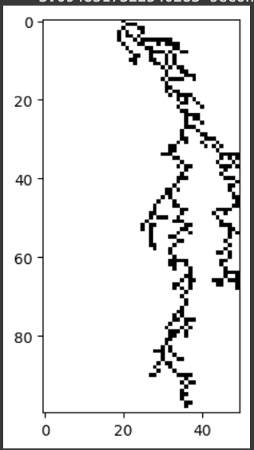
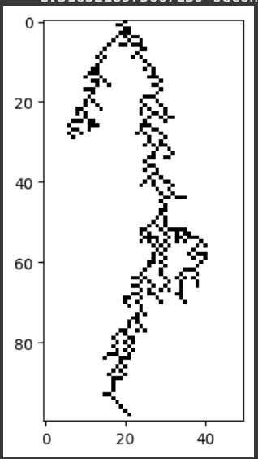
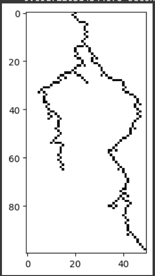
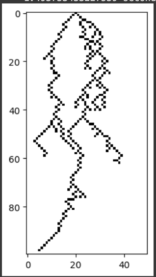
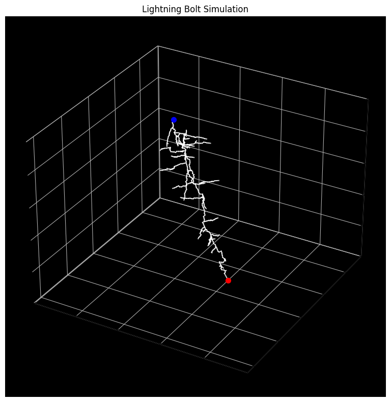
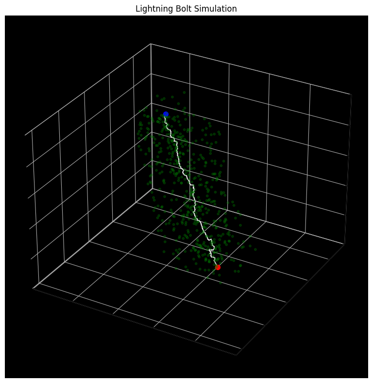
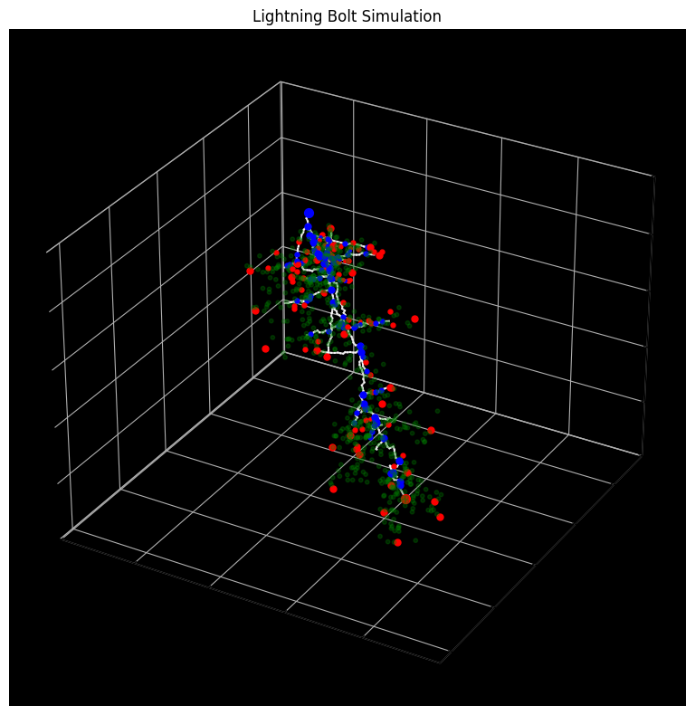
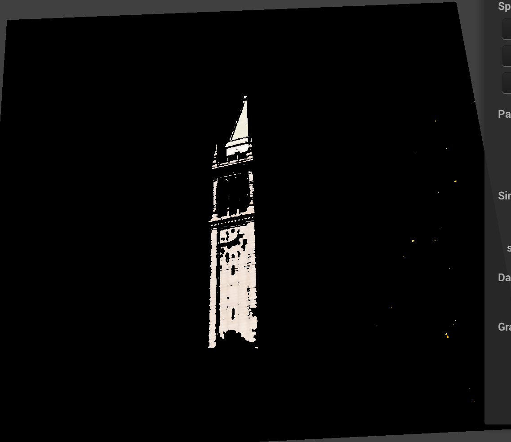
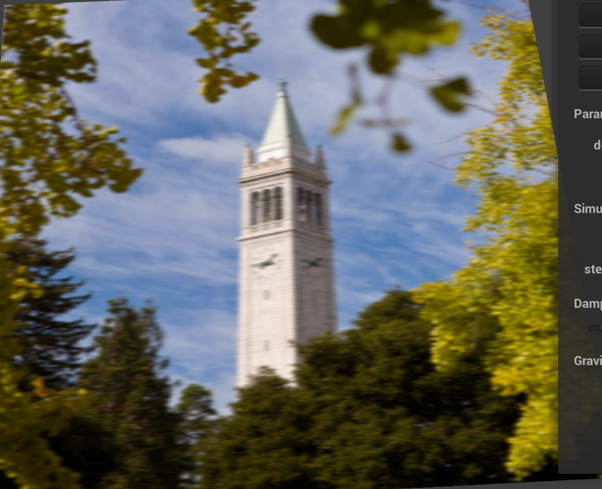

Lightning Variety Simulation Project
Names: Jennifer Cao, Sonia Chacon, Claire Ding, James Ni
Link to webpage:
https://arumilla.github.io/finalprojectwebpage/milestone/index.html
Link to Slides:
https://docs.google.com/presentation/d/14tYuB4O1VHmGTCLb5vw9DYbbn5CyloZO2ufeRsMVb-4/edit?usp=sharing
Link to Video:
https://docs.google.com/presentation/d/14tYuB4O1VHmGTCLb5vw9DYbbn5CyloZO2ufeRsMVb-4/edit?usp=sharing
Accomplishments
After reading through the graphics and physics literature of lightning, we realized that real-life lightning is still poorly understood. Most physically-based simulated results focus solely on path-generation via the diaelectric breakdown model (DBM), which involves solving a system of partial differential equations relating to the electric charge, fields, and potential of points in the atmosphere [1, 2]. However, the most up-to-date hypothesis on real-life lightning formation argues that the propogation of lightning "leaders" is not based on electric fields, but rather an accumulation of metastable oxygen molecules [3]. Thus, because this is a computer graphics and not a physics class, we adjusted the scope of our project to come up with fast approximations for existing models, so that lightning can be configured, generated, and rendered in real-time. In order to demonstrate that these approximations are valid, we also opt to add interactivity to the simulation.
We build off the simulation and rendering framework of Homework 4, dividing the project into the two focuses: 1) fast approximations, and 2) interactivity. 1) focuses on implementing variations on 2 existing models for physically-based lightning, with options for potentially a 3rd. 2) focuses on adding GUI elements and shaders for the interactivity and real-time rendering aspect of the project.
Lightning Path Simulation
A fast approximation to the DBM
One path algorithm we implemented is based off a fast approximation to the DBM refernced in [2]. This algorithm calculates the approximate probability distribution of potentials based on the DBM, for boundary cells around the current lighting path, and chooses the next candidate cell based on the distribution. As the lightning path grows, so does the number of boundary cells. To speed up the simulation, we vectorized the probability computation and added additional parameters to cap the number of boundary cells to a certain number by removing earlier boundary cells with low probability of sampling. Additional parameters \(n\) and \(p\) affect the amount of branching that occurs. In general, higher values of \(n\) and \(p\) correlate to less branching.
Natural next steps include lifting the algorithm from 2D to 3D and performing additional optimizations. Additionally, because the model is physically-based, we can add scene elements such as negative charges or electric fields, which would alter the behavior of lightning.
|

n = 1, p = 1
|

n = 1, p = 3
|
|

n = 3, p = 1
|

n = 3, p = 3
|
Recursive space colonization
Another path algorithm we implemented is based off a space colonization algorithm - originally designed as an algorithm for generating foliage and trees [ref] - introduced in the paper [ref]. While the algorithm is not rigidly grounded in physics, there are several compelling arguments for why space colonization can be a better approximation to actual lightning than a DBM model:
- Space colonization is incredibly fast compared to physically-based models (PDE solvers).
- Once the environment is initially configured, the actual path formation (assuming no branching) is entirely determinstic.
- Corona pulses and metastable accumulation in the model proposed by Locke [ref], operate more similarly to the space colonization attractor and kill model.
We developed a vectorized, and recursive space colonization algorithm, improving on the fixed and limited branching method used in [ref]. We also made the stepping of the main leader and branches synchronous in anticipation of time-based simulation. Natural next steps include coming up with better branching heuristics (colonization volumes) which better model real-life lightning, and incorporating dynamic time steps (currently, each step occurs over 1 unit of time).
|

A 3D rendered lightning bolt via space colonization.
|

The volume and attractor points used for the main path.
|
|

Branch volumes and endpoints.
|
Simulation platform
Claire
Shaders
For rendering the lightning to look like a light source, we decided on using shaders to create a bloom effect since it will no longer be physically based.
In order to create the bloom effect, we decided to follow OpenGL’s guide on creating the bloom effect using a high pass shader(to isolate the light emitting bodies), a gaussian blur shader(to create the light emitting effect) and a compositing shader that combines the base image of the scene with the blurred scene to create the final bloom effect.
Currently, we have completed the high pass shader and the gaussian blur shader but in order to create the final image, we will need to modify the rendering pipeline in homework 4 to support running multiple shaders.
|

A picture rendered with a high-pass shader
|

A picture rentered with a Gaussian blur shader
|
Schedule
Due to large modifications to the project, our initial roadmap is no longer valid. In the coming weeks, we plan to:
Week 3 (4/20 - 4/26)
-
Lift the approximate DBM model to 3D, perform further optimizations, and experiment with changing the electric field via scene elements.
-
Improve the branching heuristics of the space colonization model, and add dynamic step lengths for real-time simulation.
-
claire
-
Continue work on the rendering pipeline and integrate with updated simulation platform.
-
(Reach Goal) As a 3rd method, come up with a simulated model of Locke [ref] by simulating gradual metastable accumulation using approximations of the PDE system.
Week 4 (4/27 - 5/3)
Continue working on the tasks above, and critically integrate all the pieces together.
References
[1] Kim T, Lin M.C. (2004). Physically based animation and rendering of lightning. 12th Pacific Conference on Computer Graphics and Applications, Seoul, Korea (South), 2004. 10.1109/PCCGA.2004.1348357
[2] Yun J, Son M, Choi B, Kim T, Yoon S.E. (2017). Physically inspired, interactive lightning generation. Computer Animation and Virtual Worlds. 28:e1760. 10.1002/cav.1760
[3] Lowke, J & Szili, E. (2022). Toward a theory of "stepped-leaders" of lightning. Journal of Physics D: Applied Physics. 56. 10.1088/1361-6463/aca103
[4] Reis N & Fernandes A.R. (2022). Using a Space Colonization Algorithm for Lightning Simulation. 2022 International Conference on Graphics and Interaction (ICGI), Aveiro, Portugal, 2022. 10.1109/ICGI57174.2022.9990427